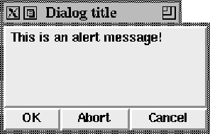
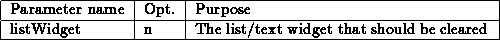
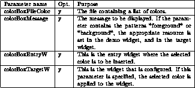

This template defines a new procedure named CursorBox. Calling this procedure pops up a dialog box to select a cursor. The cursor can be selected from a list, or entered directly. The foreground and the background color can be selected. If the template ColorBox exists, a double click with the right mouse button activates the color selection box. The procedure gets the following parameters:

To configure the different aspects of the cursor box, there exists a global array named cursorBox. A default value of ``-'' means that the Tk default value is used. This array contains elements that control the cursor box (color, font etc.):

A small example of an invocation may look like this:
CursorBox ''/usr/local/lib/Cursors'' ''/usr/lib/X11/rgb.txt''
This would create the following dialog box:

Figure: The template CursorBox